Unit 1 Module 1
GEOG246-346
2026-09-02 Back to home
Source:vignettes/unit1-module1.Rmd
unit1-module1.RmdIntroduction
This unit has two general focus areas:
A overview of the R language, its history, use, strengths, weaknesses, and evolutionary trajectory.
An introduction to the concepts and skills of reproducibility
The first focus area primarily entails reading and watching online
resources. The second requires the same plus hands-on work with Rstudio,
R’s industry-standard IDE,
and git and GitHub, which are two tools that are
critical to the mission of reproducibility.
R overview
There is a vast amount of material online about R. We
have selected a few resources from among these for you to read and/or
watch, so that you get a sense about the language and what it does.
You should complete these assignments by the first class.
Roger Peng (Johns Hopkins University) provides a nice history and
overview of R in this 16 minute youtube video
that introduces his own R course. This provides some
insight into R system the advantages and disadvantages
(e.g. memory-dependence) of R, the freedoms associated with using
R, as well as the basic system design and package
ecosystem.
Hadley Wickham’s introduction
section to his book Advanced
R provides a nice bullet-point summary of R’s
advantages and disadvantages.
Please also visit R’s homepage, the center of the
R universe, and particularly CRAN, where official
R packages live (actually the link provided is the closest
CRAN mirror site, which lives at Carnegie Mellon University).
Finally, you might have heard of the python programming
language, and wonder why you are learning R. Good question.
You can’t throw a rock without hitting a python versus
R comparison, and here’s one
of the examples of this genre. Please have a look, but basically
each language has a lot of similarities, and one would do very well to
learn both. In fact, the company that makes Rstudio recently changed
it’s name to posit, a reflection of
their growing emphasis of the realization that both R and
python are used by data scientists, including for
geospatial data science. One thing I have yet to find, but maybe we will
do in this class, is a rigorous comparison of R and
python for their ability to handle spatial data. There are
comparisons out there, but none really comprehensive, e.g. this).
Both languages have strong geospatial capabilties, but my own personal
(and admittedly biased and unscientific) sense is that R’s
capabilities to do standalone spatial analysis may still be more
developed than python’s. A solid comparison of
sf and geopandas and terra
against xarray can provide some insight into this.
On the other hand, python is preferred for machine
learning applications on remote sensing data, particularly for deep
learning, and it offers probably a more developed set of packages for
working with cloud platforms such as Google’s
Earth Engine, as well as QGIS and ArcGIS. It is also preferred, it
seems, for setting up production workflows. So, really, there is a case
for learning both languages, and the reticulate
package from Rstudio make it increasingly possible to use both
languages in more integrated fashion, as the need arises. That’s a
subject for another time (and not this class), but just one more reason
why we should think about R and python rather
than R or python.
The tools and concepts of reproducibility
Reproducibility
The first set of skills we are going to learn in this course are not related to R, but more generally to programs and concepts that foster reproducibility. What is that? A good working definition of the term, as it relates to scientific computing, is:
the ability of a researcher to duplicate the results of a prior study using the same materials as were used by the original investigator. That is, a second researcher might use the same raw data to build the same analysis files and implement the same statistical analysis in an attempt to yield the same results.
That is actually a quote by Goodman, Fanelli, & Ioannidis (2016) in an e-book on reproducibility, but it works here.
Reproducibility is a useful concept/mindset to learn, regardless of whether you are going into academia or industry, as it ultimately makes your life easier, particularly when you have to revisit and revise work. The practice of making your work reproducible also makes it easier to share your work with others.
A great deal more about reproducibiity is written in the aforementioned book. You should read this paper in PLOS Computational Biology, which lays out 10 rules for reproducibility.
The tools of reproducibility
Version control and git
However, we are going to dive in and go straight to learning some of
the tools of reproducibility. First, we are going to learn about
git. git is version control software. Working
with version control basically entails maintaining a single set of files
(generally code files, but also other kind of documents, but typically
not large binary images, such as rasters) for a project, and making
changes to those files as you go in a way that keeps those changes out
of sight, but makes it easy to recover them if you need them. For
example, the file that we used to create this html document is called
unit1-module1.Rmd (it’s an Rmarkdown file, which we will be
learning more about shortly) is under version control. I have made many
edits to it as I created it, but I have only one version of it visible
in the file system. Previous versions of and changes to the file can be
found in the prior commits.
The image below illustrates version control–this shows Rstudio’s
interface to git, comparing the text in the paragraph above
to the text in the previous committed version of this file: the pink
shows the older paragraph, the green the newer one (I changed just a few
lines in there)
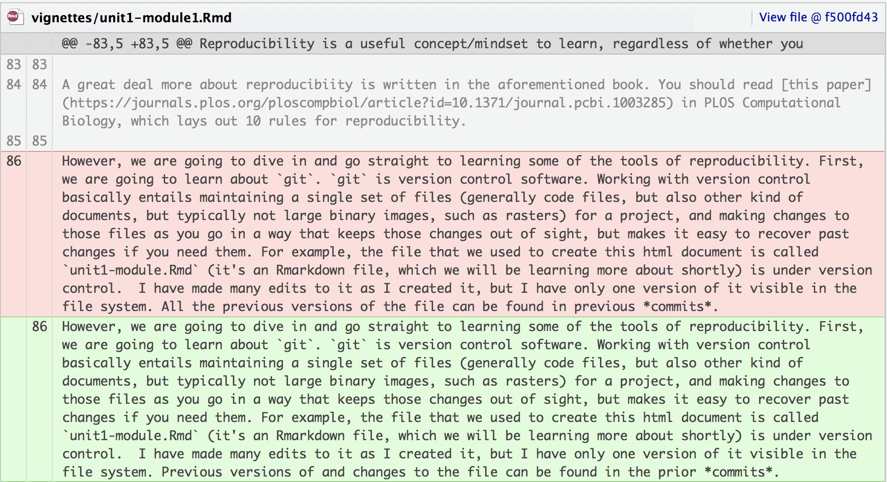
So, that is a small taste of version control. If you have ever worked
with Google Docs, it does its own form of version control–you can look
back at previous edits and changes. Using git is a bit more
explicit and deliberate than that–you have to make commits manually,
changes aren’t saved automatically, but that’s okay, and it helps us
choose how much we want to change before committing the file
version.
So why are we using it here? We want to avoid this common practice used when updating project documents: make a file, name it something, make a bunch of changes, decide you want to keep the previous version -> make a new copy of the file -> append the date to the filename to track the changes. Before long you end up with a cluttered directory that might look something like this:
├── my_folder
├── somefile.txt
├── Somefile_jan 20 2018.txt
├── somefile_2 Feb2018.txt
├── somefile_jan12018.txtYou can’t remember what’s in each file or when you made a particular
change, and you start to hunt. Version control helps us keep folders
neat and pruned, and makes edits fairly recoverable, so that we can just
use a single file (in the example above) called
somefile.txt and keep track of all the changes made to that
file. That’s why we are going to use git in this class.
git and GitHub
git is a program that lives on your local machine. You
can make commits locally, and just keep things under version control on
your local machine. If you want to collaborate, or even work with your
project across multiple machines, you can create a remotely stored
version of your git project (repository) on GitHub. GitHub is one of several web
services that provides hosting for git repositories. It also provides
useful collaboration functionality. We’ll come back to this.
Packages
Packages are another tool of reproducibility that we will learn to
use in this class. Packages are bundles of code and documentation that
provide a specific functionality for a particular language. Both
python and R make extensive use of packages,
as the utility of both languages depends heavily on user-contributed
code. Code contributions are made through packages, which standardize
and formalize the user-developed functions so that they work properly
within the language, and can be easily used by the broader community.
Packages are also useful even if you don’t intend to contribute code to
the community, as they have a particular structure that can be useful
for helping to organize and formalize your thinking, data analysis, and
reporting. They can also save you time as they make it much easier to
access functions that you have developed for one project and apply them
to another. I learned these ideas from reading Hillary Parker’s blog
post on personal R packages, as well as Karl Broman’s R package
primer, and of course Hadley Wickham’s introduction to his
R packages book (please read all aforementioned links).
I have adopted the package structure for organizing the analyses and
writing of each of my papers. For example, two of my most recent papers
are structured as R packages that can be installed from
their GitHub repositories (which can be found here and here). These
contain all the code used to do the analyses, create the figures, and
full (non-journal formatted) versions of the manuscripts. And (as you
may have noticed by now), this class is also structured as an
R package.
Setting up
Installations
The first thing you need to do, if you haven’t already done this
after visiting the geospaar
repository, is to install the materials. The easiest way to do this,
because it will give you a full installation of R, Rstudio, and all the
necessary packages for working with this material, is to use
docker and pull or build the latest image from
docker hub. Alternatively, you can get standalone versions
of R and Rstudio and use that. We will cover both options here, but
prefer to use the docker-based approach.
Get git and a GitHub account
The first thing you need to do is to install git on your
computer, by following links
here to get the version for your OS. If you are installing
git on Windows you should install a Linux terminal
emulator, such as WSL,
or Git Bash. If using
WSL, follow the directions
for installing git after installing it. If using
Git Bash, it will have already installed git
for you. You can also get away with Windows command prompt or Power
Shell, but a *nix emulator is vastly preferred.
Next, get a GitHub account, if you don’t already have one. To do so, please go to github.com and sign up for a free account. For the course, you will also need to get a personal access token for GitHub, which is necessary for undertaking assignments (which will be on submitted in a private repo established on your own GitHub account). To get the PAT, go into your GitHub account, and click settings, and then (on the left) developer settings, and then select personal access tokens. Generate a new token, name it something meaningful, and check the “repo” box:
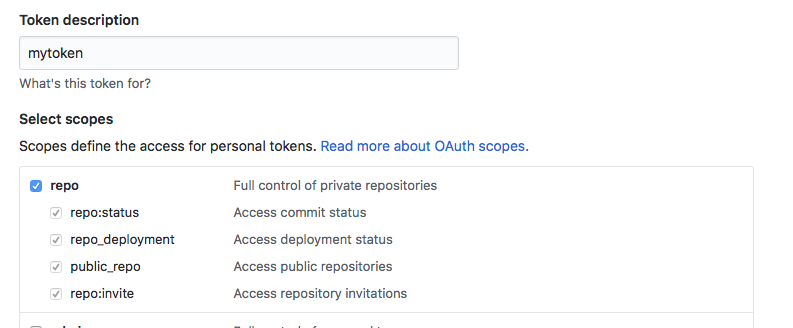
Copy the token and paste it somewhere safe (e.g. a secure password manager)
Set up a project directory
Set up a directory into which you will install this package, and in
which you will develop your own repositories/packages for this class.
Assuming you have a directory called something like
c:\My Documents\projects (if you are Windows-ish, or
~/Documents/projects, if you are on a Macbook), make a
sub-folder called geog246346. Using your command line
interface (your terminal or terminal emulator), navigate to it.
If you are using a Mac:
Clone the geospaar repository
Once you have your project directory set up and you have navigated
into it, change into and then clone the geospaar repository
into that directory:
The docker route
If you are going the docker route, you should next
download and install the version of docker for your
operating system from here, and
create an account. It might be preferrable to sign up with your GitHub
credentials. Using docker, you can get the latest docker image and start
the container running using the following commands:
VERSION=4.4.2
PORT=8787 # choose another port if this one is in use
./geospaar/run-container.sh -v "$VERSION" -p "$PORT" "$(pwd)"This should give you a URL (https://localhost:8787) that you can copy and paste into your browser, which will will then give you a fully functioning Rstudio-server instance after you log in.
You can also build the image locally from scratch using, for Windows:
Or, for Mac:
And after the image is built you can run the same:
VERSION=4.4.2
PORT=8787 # choose another port if this one is in use
./geospaar/run-container.sh -v "$VERSION" -p "$PORT" "$(pwd)"Simplest however is to not built locally and instead get the pre-built image by running the above.
The local install route
If you opt not to use the docker route, or even if you
do, but want a local R/Rstudio installation,
then:
- Install
Rfor your OS from Rstudio’s link to CRAN’s R downloads (use default options) - And then [download] (https://www.rstudio.com/products/rstudio/download/#download) and install Rstudio (use default options).
Your first Rstudio project
At this point, working in either the dockerized
Rstudio-server interface, or your local Rstudio, we are going to get
started with Rstudio and our reproducibility tools by using some of
Rstudio’s handy built-in capabilities. We’ll do that by creating a new
Rstudio project that has the minimal set of files and folders needed for
an R package, as well as its own git repository.
To do this, with Rstudio: 1. Find the Packages tab, click install,
type “devtools” into the “Packages” dialog, and click install. You will
notice a bunch of stuff installing in the console (note: skip this step
if you are working in the docker
image–devtools is already installed) 2. When that is
finished, select File > New Project 3. In the new project dialog that
pops up, choose “New Directory”, and then in the next page, select the
“R package” option at the very bottom. You will see a screen that looks
like this:
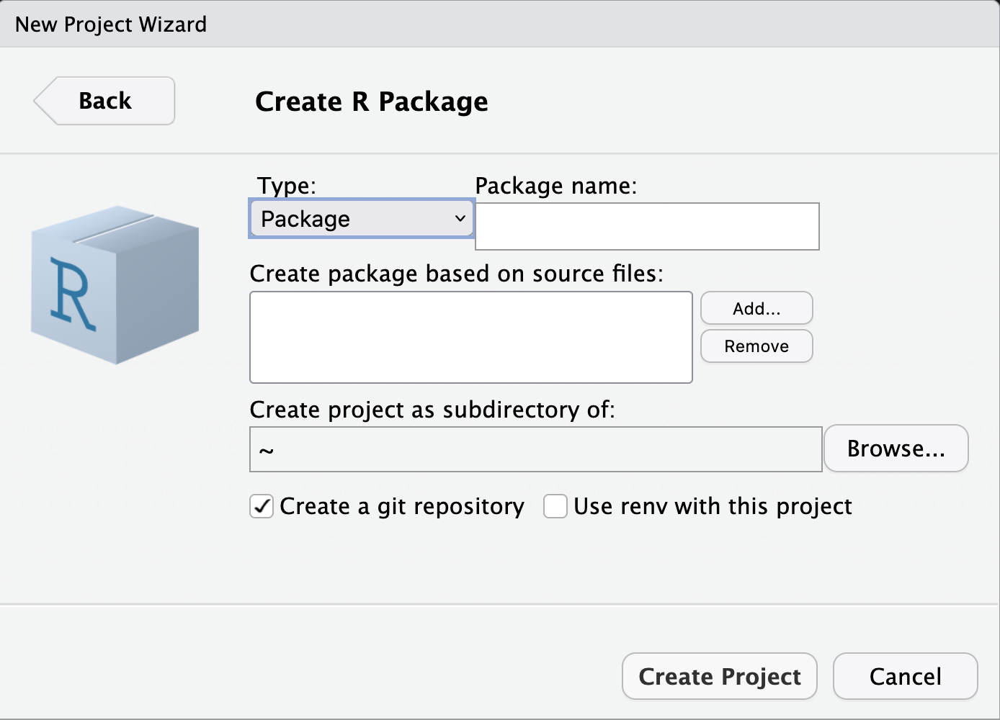
-
Here we’ll make a couple of decisions:
- Name the package using your initials (in lowercase) followed by the
three digits of the course (246 or 346, depending on which you are
enrolled in), e.g. in my case it would be lde346. Do
not, one more time, DO NOT, name it using a
different convention, e.g.
MyFirstNameLastName346. If you do, you will lose points on your assignments.
- Under the “Create project as sub-directory of” enter the folder
where you want this project to live. If you are using the
dockerapproach, leave the default~in the dialog. Otherwise, if you are working with a local Rstudio install, you should use a folder that is relevant, e.g. one in which you keep all course-related work. I do not suggest your Desktop as a good location, as shown here. - Check the option to “Create a git repository”
- Leave unchecked the “Use renv with this project”
- Click “Create Project”
- Name the package using your initials (in lowercase) followed by the
three digits of the course (246 or 346, depending on which you are
enrolled in), e.g. in my case it would be lde346. Do
not, one more time, DO NOT, name it using a
different convention, e.g.
-
You will now have an opened Rstudio project, with the name you selected. You are going to be working in this project for the first two units of the class. Let’s configure Rstudio a bit first. Your first view, if you are not using the docker version (assuming this is your first use of Rstudio) will look something like this:
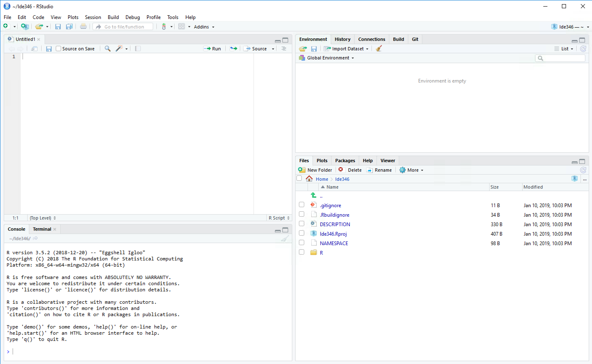
If this is what you see (because you are not using the
dockerimage, which already provides this view as default) modify the pane layout first, by going to Tools > Global Options > Pane Layout, and make it match this: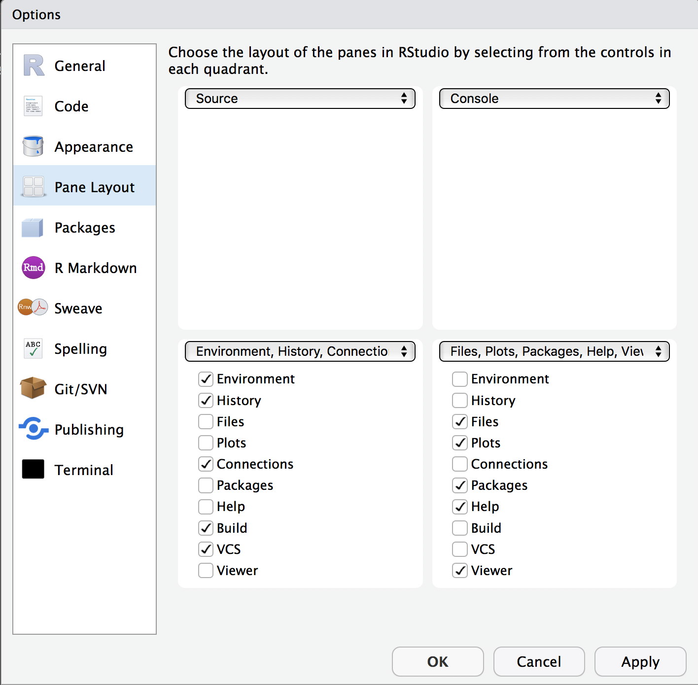
You can also change the Rstudio theme by going to Tools > Global Options > Appearance (I personally prefer light text on dark backgrounds). Also check the Tools > Terminal tab, and make sure that either “Bash” (Mac/Linux) or “Git Bash” (Windows) are enabled in the “New terminals open with” dialog.
You should also see a terminal tab next to the console tab:
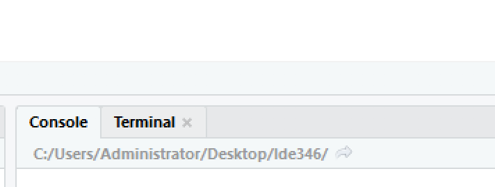
Last thing under Global Options to modify: > Code > Display > Check Show Margin tab, which should have 80 in the margin column value box.
If you are using the
dockerimage, feel free to modify the options how you see fit. Now let’s set up some project options that will make our lives easier when building packages (again, this is already done if you are using the
dockerversion). Go to Tools > Project Options, and make it look like this (i.e. check “Generate documentation with Roxygen” and check all boxes in the dialog after click the Configure button):
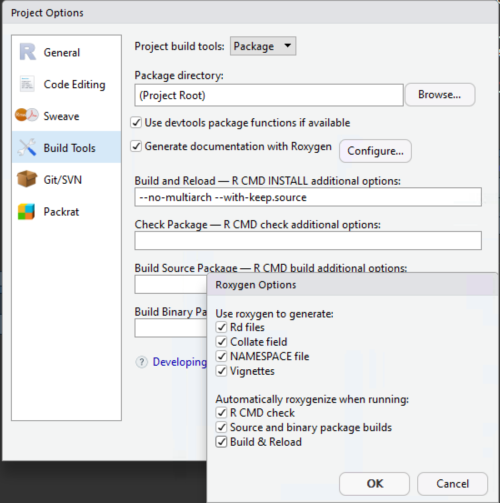
Okay, we are basically set-up with the full set of tools you need. We
are now going to learn to work with git.
Using git and GitHub
Before we get started with some hands on work with git,
it is important to understand a bit more about version control than the
very brief overview we provided in above. Read the good explanation
of version control systems in the Pro Git book, which tells us
that git is a distributed version control system. Getting
Started - Git Basics explains to us exactly how git
works and how it is different from other version control softwares.
Another important concept to learn is branching, which is
explained in this
chapter, and which, in essence, is a way of isolating specific
changes you want to make to your code from the main body of your code
(which might need to be preserved as is so others can keep using it
without it breaking), or, as the book says:
Branching means you diverge from the main line of development and continue to do work without messing with that main line
Another post on git branching (and merging, which we will come back to) has a more effective schematic for showing the concept and why it is used.

This schematic is oriented towards software development projects. For the purposes of this class, however, you will use a simplified version of this structure to separate your assignments from one another.
git configuration
If you have just installed git on your computer, before
we can use it, we need to do a little bit of configuration. You can
either use your terminal (mac/linux), WSL or
git bash terminal (Windows), or the terminal RStudio
provides to do this (if you are working with the docker
image, use this option). So, choose the best one of those for you, and
then, at the prompt enter:
git config --global user.name "YOUR GITHUB USER NAME"
git config --global user.email "EMAIL ADDRESS LINKED TO YOUR GITHUB ACCOUNT"Replace the prompt text in the above commands with your GitHub user name and email address associated with your GitHub account, respectively.
Your first commit
Let’s start to use git now. We are going to do this
using Rstudio’s git interface, and the project you just
created in the previous section. So open that project (mine is
lde346.Rproj, which is found in the lde346 folder on my computer–I can
open it and Rstudio up by double-clicking the .Rproj file).
Once in there, click on the “Files” tab, and you will see your directory structure, which should look like what you see in the image below.
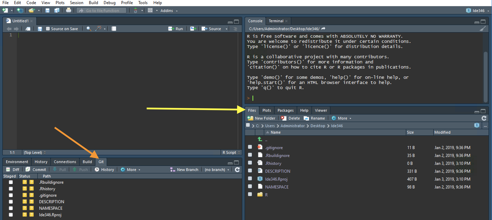
New Rstudio package project file structure (yellow arrow) and git tab (orange arrow). Rstudio’s Editor theme is ‘Idle Fingers’.
You will also notice the git tab in lower left of the
image, which has a listing of the same files with yellow boxes with
question marks in them under the status section. This is Rstudio’s GUI
interface to git. You can get the same information by going
to Rstudio’s terminal tab (upper right), and typing at the prompt in
there: git status, which gives this output:
If you don’t see the git tab, go
to Tools -> Project Options -> Git/SVN and select Git. Click yes
to create a new Git repo.
$ git status
On branch main
No commits yet
Untracked files:
(use "git add <file>..." to include in what will be committed)
.Rbuildignore
.Rhistory
.gitignore
DESCRIPTION
NAMESPACE
lde346.Rproj
nothing added to commit but untracked files present (use "git add" to track)The yellow boxes in the git GUI are telling us that
those files are currently untracked by git, i.e. they are
not committed to the git repo, so if we make any changes to
those files, git won’t know anything about those changes.
So where is the git repo, and how do we let it know it
should start tracking a file?
The repo itself is a hidden file (it begins with a “.”) that lives in
the top level of your project directory. Most file systems by default do
not show hidden directories, so if you want to see it, you either have
to tell your file explorer to show hidden items, or you can see what’s
there using a handy command in terminal: ls -a, which
roughly means list all files in this directory.
$ ls -a
. .Rbuildignore .Rproj.user .gitignore NAMESPACE lde346.Rproj
.. .Rhistory .git DESCRIPTION RNote the .git. That’s the folder that contains all the inner workings
of a git project, which we won’t go into but if you are
interested you can explore with ls .git, which show you the
contents.
To get git to track your files, the easiest is to simply
check the boxes in the GUI. For example, check the boxes next to the
files “.gitignore”, “DESCRIPTION”, “NAMESPACE”, and the .Rproj file. You
will see the yellow checkmarks changed to green boxes with “A” in them,
meaning the files have been staged for a commit. This is equivalent to
going back to terminal, and running the command (note I am using the
.Rproj filename for my example):
I don’t really want git to track the .Rbuildignore and
.Rhistory files, so I add these to the .gitignore file, which means
git will not track those files and they will no longer
appear in the git GUI with yellow boxes with question marks
next to them. To add that, shift-click on the file names (not the check
boxes) in the GUI, and then right-click, and choose “ignore” in the
dialog that pops up. That will bring up another box that lists those two
files below .Rproj.user. Click save on the dialog. Immediately you will
notice in the GUI that those two files have disappeared, and .gitignore
has a blue box with “M” appear next the green A box. That means that the
file has been staged to be committed, and has been modified since it was
staged. The check in the box next to it has been replaced by solid blue,
meaning the modification has not been staged–to stage it, click the box
again, and the blue M will disappear.
We are now ready to make our first commit. So, press the “Commit” button in the GUI, and up will pop a big box, showing the files you added, and giving you a dialog to leave a commit message. The message you put in there should be concise but informative as to what changes you are committing to the repo.
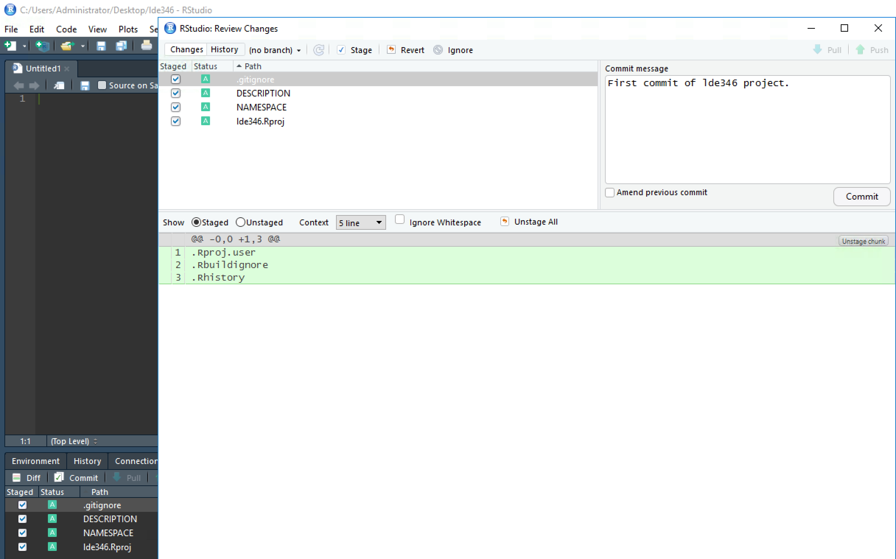
RStudio git commit window with message
The bottom pane shows the changes being made within the particular file that is selected in the upper left pane (the .gitignore file in this example). The highlighting is green, which means that the lines in questions are being added. If this was a previously committed file that had been changed, you would see a light red line above it that shows the text/code that was in the prior version that is being replaced. You can refer back to the first figure for an example of that, but we can also do the same here with some modifications and a second commit. First though, let’s make the commit by simply pressing the “Commit” button in the dialog. Once that is done, you will see a smaller dialog pop-up and tell you the commits that were made, assuming nothing went wrong. Close it when done. Note, that this whole GUI-based commit process (not including the staging) is analagous to running the fulling command in terminal:
Now, let’s make a change. Go to the file dialog, and double-click the DESCRIPTION file to open it. This is a key part of an R package. Mine has the following text
Package: lde346
Type: Package
Title: What the Package Does (Title Case)
Version: 0.1.0
Authors@R: c(
person(
"Jane", "Doe",
email = "jane@example.com",
role = c("aut", "cre")
)
)
Description: More about what it does (maybe more than one line).
Continuation lines should be indented.
License: What license is it under?
Encoding: UTF-8
LazyData: trueChange the Title line to something informative, e.g. “GEOG246-346 coursework”, and replace the name and email in Authors@R with your own, following the formatting. Replace the “Description” with something longer, such as “Package for GEOG246-346 class assignments”.
Once those are done, save the changes, and then go back to the
git GUI, where you will see a blue M next to the
DESCRIPTION file. Commit the changes with a meaningful message
(e.g. “Editing name and purpose in DESCRIPTION”). You will see in the
commit dialog how the changes are recorded (old text in red, new in
green), and once committed that 4 deletions and 5 insertions were
recorded.
So, that’s how changes are tracked and committed in a local
git repo. You can use the “History” button in the
git GUI to see the history of your commits and all the
changes that they entailed, which you should explore on your own.
Syncing your repo using GitHub
Now that you know the basics of git commits on your
local machine, you’ll want to push your project repo to a remote repo
hosted on GitHub, and then keep it synchronized with GitHub. There are a
few steps we will have to go through to do that.
SSH keys and access token
First, you will need to create an SSH private-public key pair on your
computer, if you don’t have one already, and then add that key to GitHub
(you will need to do this for each computer you want to connect to
GitHub). The most direct set of instructions, which revolve around
RStudio, are found here (and this is
generally a great resource covering how to work with git,
GitHub, and R/Rstudio) here. To wit, use the following
command in the R console:
file.exists("~/.ssh/id_rsa.pub")
file.exists("~/.ssh/id_ed25519.pub")If the answer to both is “False”, then you will need to create a new
SSH key. The easiest way to do that is to go into RStudio Tools >
Global Options > Git/SVN and click “Create SSH key”. Leave the
passphrase empty, and click through. Keep the ED25519 key
type. (See here for more
information on ED25519 vs RSA key types)
Press the View public key button above the SSH RSA Key dialog, and copy the text of the key. Then follow steps under “Adding a new SSH key to your account” in this GitHub document to add the SSH key to your GitHub account. You can find your public SSH key by going to Tools -> Global Options -> Git/SVN -> View Public Key.
If you already have an existing SSH key, then I suggest following these instructions here to get it.
Once you have that set up, test your SSH connection following steps 1-4 here, but in place of Step 1 simply go into RStudio’s terminal.
Next, you will also have to set up an access token. To do that, under your GitHub Settings, navigate to the “Developer Settings” on the left hand menu, and then click “Personal Access Token”, and choose “Tokens (classic)”. Fill-out the note with something informative, and choose the expiration date as “custom”, setting it to something just past the end of the semester, and then check the “Repo” box under scopes. Click “Generate Token” at the bottom, and then copy the token and save it somewhere safe (we strongly recommend the use of password management software that keeps passwords in a vault). This token will be the password you have to enter when GitHub prompts you for credentials (see next section). s
Create new private repo on GitHub
For class assignments, you will use a private GitHub repository for your assignments, so that they are only viewable only by you and the course instructors). To set up a private repo, log onto your GitHub account, and, in your Dashboard view (which is where you should be taken), clean the green “New” icon. You will see a dialog that looks like this:
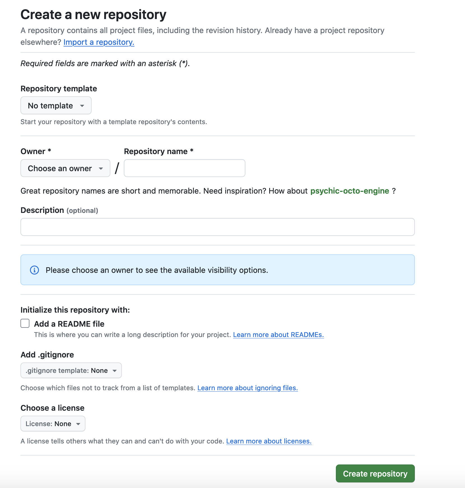
Find the dropdown box on the left that shows your GitHub user name,
click on it. In the repository name dialog, enter the same exact name
that you used for making your local project repo (i.e. the name of your
RStudio project folder, e.g. lde346), select the option to make the repo
private, and enter in the Description dialog “GEOG246-346 class repo”.
Leave the rest of the fields as they look in this image, then click
“Create Repository”. That will bring up another page where you will see
your new repository name at the top, followed by two options, one for
“Set Up GitHub Copilot” (ignore this), another for Add collaborators to
this repository”, followed by three packages of commands. Copy the
middle set of commands below the text “…or push an existing repository
from the command line”, and then paste them into RStudio’s terminal
(note, the lde346.git in the first line will be replaced by
the name of your project repo).
git remote add origin https://github.com/ldemaz/lde346.git
git branch -M main
git push -u origin mainDon’t run them yet. First click on the option to add collaborators, and then invite both of us instructors as collaborators to your repo, using our GitHub user names. Invite them to have write access to your repo.
Then run those copied lines from your Rstudio terminal. Note that if you have just set up your SSH keys in RStudio, you might be prompted to enter your GitHub user name and password (the token you generated) after the second command.
Now, go back to the GitHub repository, and refresh the page, and you will see your committed files in there.
Synchronizing with your remote repo
Now that you have a remote repository, you will want to keep it synchronized. The meets that every time you make a commit in your local repo, you should follow it with a push, to make sure the change is committed onto GitHub.
You will notice now, if you look back in RStudio’s git
GUI, that the push and pull buttons, which were previously greyed out,
are now live. So, that means we can interact with the GitHub repo. Let’s
first do a push. Reopen your DESCRIPTION file, and change this line:
Version: 0.0.0.9000To
Version: 0.0.1Commit the change with a meaningful message (“Updated package version
number”), and then once you have done that, press the “Push” button
(which you can access either from the big commit dialog, or in the main
git GUI of RStudio). If you go to your repo on GitHub, you
will see your new commit message next to your use icon, above the list
of files. Have a look at the file itself on GitHub to see that the
change is in fact now shown on GitHub.
So that was a “push”. What about a “pull”? A pull is done when a change is made on your GitHub repo that is not on your local repo (i.e. your remote repo is ahead of your local repo). How might that happen? In cases where the remote repo is synced to another local repo on another computer, either because you have connected it to a different computer (e.g. your lab computer), or because another person who has permission to write changes to it has. The act of creating a new local copy of a remote repo is called cloning.
In cases where your local repo is behind your remote repo, you can use the Pull button to bring your remote up to date. That should usually be enough, although conflicts might arise between your local and remote repo, particularly in cases where the remote is much further ahead. We won’t deal with that right now, however.
Cloning the remote repo
Instead, let’s look at how we can use RStudio to create a new project from your remote repo, which you can use to have the project on both your home and lab computer, so you can make changes from either location. This is quite simple.
- On the new machine, which I am assuming already has RStudio set up
(in the
dockerimage or standalone), complete withgitand ssh keys connected to your GitHub account, you would simply go to File > New Project > Version Control > Git, - Copy into the “Repository name” dialog at the top the full repo path, which you get by going to the repo’s main page on GitHub and pressing the big green “Code” dialog, and copying the resulting URL string. Note you choose to clone using either HTTPs or SSH, which each give slightly different links. You might have to trial and error to get the one that works, but try SSH to start.
- In the second box (directory name), use the same name as the repo (e.g. lde346), and then choose the directory where you want it live.
- Check open project in new session, and then voila, you have a local version of the repo fully set up.
You now have two local copies of the repo, so when you make a change on one, push it to the remote (on GitHub), and then pull the new changes down to the other.
Another note: you can spoof the process described above by simply cloning the GitHub repo on the computer you used to set it up into a different target directory. If you do that, I recommend that, once you have completed the task and closed out of the relevant RStudio session, that you delete the resulting project folder (to avoid confusion).
Branching
The last thing we are going to do is to set up a new branch in our repo. There is a whole set of instructions how to do that via terminal commands in the branching and merging section of the git/GitHub vignette. However, setting up a new branch and syncing it with the remote repo is fairly trivial in newer versions of Rstudio.
- Enter the
gitGUI - Press New Branch, add a new branch name, e.g. “test”
- Make sure the “Sync branch with remote” box is checked
- Click “Create”
The new branch will be added locally and to the remote, and you will be changed into the new branch on your local machine.
Similarly, if the new branch was created from one local machine, and there is another local machine that doesn’t yet have it, you can use the same New Branch dialog, but use the Add Remote button to enter the name of remote branch you want and create it locally.
Now you can switch back and forth between branches using the dropdown
dialog to the right of the New Branch button (or in terminal, `git
checkout
To delete the branch, you have to use the terminal (use the RStudio
terminal). First switch back into the main branch (using the Rstudio
dialog or in terminal running git checkout main), and then
run:
The first command deletes the local branch (named test), the second that branch on the remote repo.
Branching and class assignments
We are going to use branching in this class to keep track of assignments. For the current assignment, you will work in your main branch, making commits as you go. When you are ready to submit the assignment, you will create a new branch called “ax”, where “x” is replaced by the assigmnent number (e.g. “a1” for assignment 1). You will park that branch, and then switch back to main so you can start working on the next assignment.
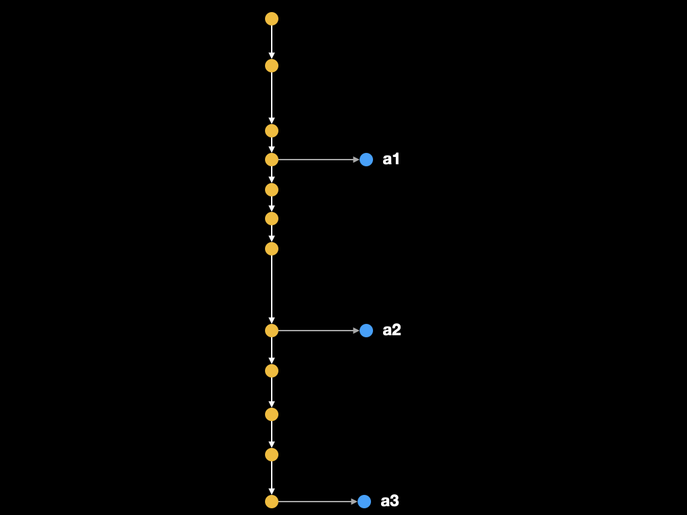
Merging
We will leave the topic of merging for now, but basically merging is quite useful when a small change on one branch (generally a side branch created for the purpose of developing a new feature or fixing a bug) needs to be incorporated into another. An example might be like this:
Create a new branch off of main branch called “fix/description”, which in our example is to fix several typos in our DESCRIPTION file
Make the typo fixes to the version of DESCRIPTION in the new fix/description branch, and commit them.
Switch back to the main branch (or
git checkout main)-
Merge the changes
Push the changes to remote, and then pull to other local repos
If that is the only time you will use the branch, then delete it (locally and to remote)
In reality, that might be too small of a change to make a whole branch for, but it is useful for illustrating the concept.
Best practices
There is a lot written on this, but for now please read the ones provided here in Hadley Wickham’s R packages book. The main idea is that commits should be frequent and cover a particular problem, rather than sprawling and involving many files.
Building an R package
We have already created the basics for setting up a package, using RStudio’s built-in tools, in section 3.3.2 above. We are now going to actually start the process of converting your project into a very simple R package.
We’ll start by learning a bit more about R packages.
First, I will direct you to a section in the
R packages book to read. When you are done with that,
please direct your attention to the structure of the project you created
(in my case, lde346). It contains several folder and files (already
discussed a bit above):
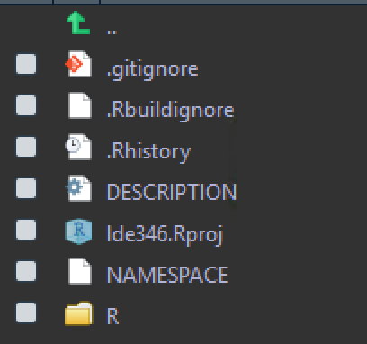
The one folder (R) and two of the files (DESCRIPTION and NAMESPACE)
are critical to building an R package. The DESCRIPTION file
provides the package’s metadata, which is described in detail here
(read this section). The NAMESPACE is described in detail here,
but as that section said, it is a complicated topic, so we won’t touch
on it now. The approach we are using to building packages updates
NAMESPACE automatically (you shouldn’t mess with it), so we will leave
for now and come back to it later on. The R folder is the
place where your core package functions live, along with their
documentation. There are a few other folders that are important for
R packages (to the extent that we use them in this class),
which are “data”, “inst”, “man”, “vignettes”. Those have not yet been
made, so we will revisit them to discuss what they do as they appear in
our package-making workflow.
You can create your first R package quite easily, as the
folder is currently structured. If you look right next to the
git tab in your RStudio interface, you will see a “Build”
tab. Click on that, and then click on the “Install” button. That will
build the package. You can confirm the package was built and installed
if you browse in the “Packages” tab (in the lower right pane in our
current setup), and browse down and find your package named listed
alphabetically. Click on that. You will see the contents of the help
pages for your package. Since you have no functions in your R folder,
and no documentation for those functions, you have no help pages. Let’s
remedy that.
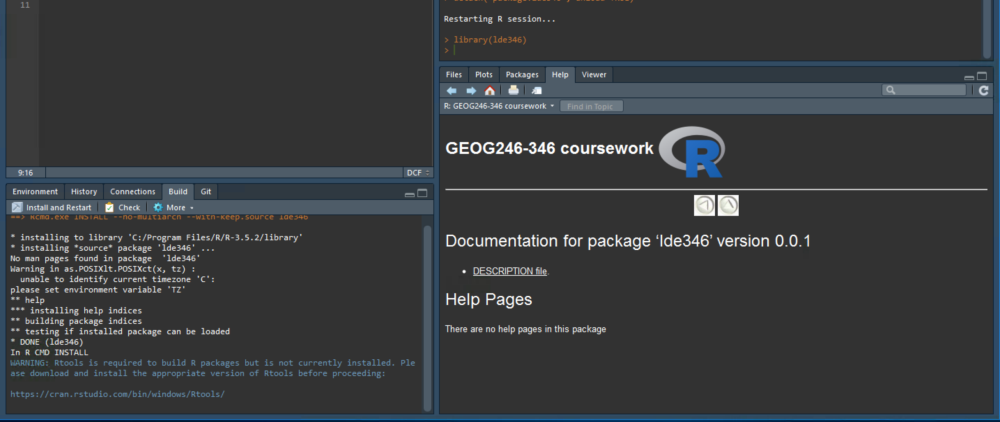
If you are not working within the docker environment,
and are using R in Windows, and have a new install, you
will probably see the warning as shown above about installing
RTools. Go to the link it shows and install the latest
recommended version of the Rtools executable (.exe).
Your first package function
We’ll learn more about exactly what a function is in the next module, but for now it is sufficient to know that a function provides a convenient way for repeating an operation without having to keep re-writing a longer set of commands, or as it is put here (in Hadley Wickham’s R for Data Science book):
You should consider writing a function whenever you’ve copied and pasted a block of code more than twice.
For example, let’s say you want to analyze a number and, then, depending on the value of the number, print out a specific message. That’s what the code below does.
x <- 7
if(x < 5) {
print("Too low!")
} else if(x > 5 & x < 10) {
print("Just right!!! :)")
} else {
print("Too high!")
}
#> [1] "Just right!!! :)"If you had to repeat this analysis multiple times throughout the course of the larger analysis, you would have to copy and paste the 7 lines of code as many times as you needed it. That’s tedious, and possibly error prone. Better to write one function that condenses this operation.
my_number_checker <- function(x) {
if(x < 5) {
print("Too low!")
} else if(x >= 5 & x < 10) {
print("Just right!!! :)")
} else {
print("Too high!")
}
} That wraps everything up into a single function, which you then execute (after compiling the function, i.e. executing the lines of the code in the session you are in) as follows:
my_number_checker(1)
#> [1] "Too low!"
my_number_checker(7)
#> [1] "Just right!!! :)"
my_number_checker(11)
#> [1] "Too high!"The lines above show how the code can be re-run three times to check
three different values, needing just 12 lines (the function itself plus
the three separate executions of it) versus 24 as originally written (3
copies of the if/else statements and
x with three different values).
A function can be written in any script, and then live only in that script. But what if you want to reuse that function some day? You’ll have to find that script and copy it to your new script. If there is any possibility of that, then you should follow Hillary Parker’s advice to make an R package:
so that you don’t have to keep thinking to yourself, “I really should just make an R package with these functions so I don’t have to keep copy/pasting them like a … luddite.” Seriously, it doesn’t have to be about sharing your code (although that is an added benefit!). It is about saving yourself time. (n.b. this is my attitude about all reproducibility.)
She goes on to provide a handy tutorial for using
devtools commands to create a package, which I followed in
creating my first package. In our case, we have started out with an
RStudio project, so we will proceed a bit differently, but basically
follow her tutorial from step 2 onwards, using the example function we
created above. So, in RStudio, go to File > New File > R script
(or CTRL(CMD, if Mac)-Shift-N), and copy the full body (all 9 lines) of
my_number_checker function above into the file, and then
save it into the R folder of your project as
my_number_checker.R
Straightforward, but now, as Hillary points out, you will need to add
documentation so that you can understand what your function does. First,
you will have to install the roxygen2 package, if you don’t
already have it (it comes with the docker image). Next,
copy and paste the lines below above the body of the function
in my_number_checker.R:
#' A number-checking function
#'
#' @description This function allows you to test whether a number falls into the
#' Goldilocks range (5-9) or not
#' @param x A number
#' @export
#' @examples
#' my_number_checker(1)
#' my_number_checker(7)
#' my_number_checker(11)The first line provides a basic short description of the function,
the second a longer description, the one beginning with
@param describes a function argument and what value it
takes as input. @export means that the function will be
exported from the package namespace (we’ll get into this later), so that
it can be called directly without having to refer to the package name,
i.e. when you load the package you can run it as:
my_number_checker(1)As opposed to
lde346::my_number_checker(1)If you don’t specify @export. The @examples
show examples of how to use the function. Also, note the #'
at the beginning of the line–this is a comment marker that is unique to
R function documentation compiled by roxygen2,
and is different from the normal # that R (as
well as python and some other languages) use for commenting
code–that is, for adding text into scripts that are ignored by the
program when executing. In this case, the roxygen2 package
reads these lines and converts them into .Rd files, which contain the
text of the package help pages. Let’s create those now, by going to
Build > Install . That is all you need to do to build the package.
You could also execute these commands in the R console:
devtools::document()
devtools::install()Which do the same thing. Your package will have built, and you will
then see under the package manual that you have a help page for
my_number_checker. Click on it, and it will look like
this:
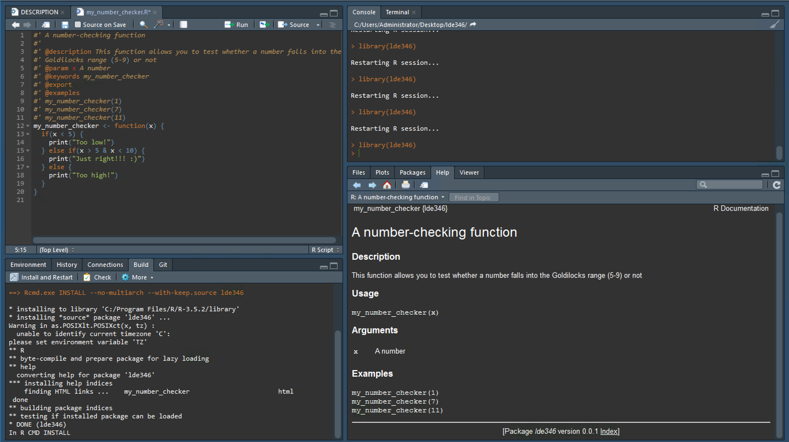
Now look at the Files tab–you will see that there is now a “man”
(manual) folder, which contains the file
my_number_checker.Rd, which has the following text in
it:
% Generated by roxygen2: do not edit by hand
% Please edit documentation in R/my_number_checker.R
\name{my_number_checker}
\alias{my_number_checker}
\title{A number-checking function}
\usage{
my_number_checker(x)
}
\arguments{
\item{x}{A number}
}
\description{
This function allows you to test whether a number falls into the Goldilocks
range (5-9) or not
}
\examples{
my_number_checker(1)
my_number_checker(7)
my_number_checker(11)
}That is the help page text in the format that is required by R. That
is much more complex, but roxygen2 converted it for you
using the much simpler syntax you pasted above the function body.
So, that is a very basic package. Let’s commit that to
git and GitHub. You will note the modification of
NAMESPACE, as well as yellow ?s next to the R and man folders in the
git dialog. Check all of those, commit, and push. Note that
the R folder made its first appearance in the git interface
now–it never appeared before git ignore empty folders.
Your first vignette
We are going to do one more thing before wrapping up this section,
which is to create a package vignette. What is a vignette? A vignette
provides long-form documentation of your R package,
describing the functions in a more detail, providing worked examples,
etc. You can find the vignette(s) for a package using the
browseVignettes command, if they are provided (they don’t
have to be), or often by browsing the help directory for the package.
For example, we can look at roxygen2’s vignettes:
browseVignettes("roxygen2")An alternative approach is navigate to the “Help” tab in Rstudio, enter the package name in the search bar, and then click on the html links to a specific vignette for the package (many packages have more than one vignette). Note: this is the preferred way to access vignettes when using Rstudio server in the docker container.
Vignettes are also useful for connecting R packages to
the broader pursuit of reproducibility. For example, you can use them to
document the entire analytical workflow for a peer-reviewed paper (as
shown in the two examples above ). Or they can
be used to deliver the materials for an R course, as we are
doing here.
In this class, you will learn to use vignettes to document your assignments, including any code that you write that does not need to be reused (and therefore converted into an assignment).
RMarkdown
We write vignettes using RMarkdown files (note: there is a newer format called Quarto that is now available, but we still use Rmarkdown because Quarto seems to need extra steps for vignettes), which provide a way of mixing text, code, and the output of that code into a variety of document formats, including html, pdf, Word, and various presentation formats. The vignette you are reading now is written in RMarkdown, and you can learn a great deal about how it works by reading the corresponding .Rmd file. But first, have a read of Rstudio’s Overview of Rmarkdown–click “Get Started” and then go through all the linked sections (Introduction through Cheatsheets). This will give a pretty thorough overview of RMarkdown and what it can do. Make sure you pay extra attention to the section on Code Chunks, particularly “Chunk Options”, which control the display and output of the code in your Rmd file.
You can pull up a template for an RMarkdown file by going to File > New File > RMarkdown (a new RStudio install might tell you to update some packages first, which you should do). Name it “Test” in the dialog it brings up, and then save it to your project directory, and then press the “Knit” button at the top of the RStudio window. That will create the html output in a special new window. Delete test.Rmd and test.html when you are finished (we don’t want to track these).
Vignettes require more yaml front matter (that’s the
part between the two sets of --- at the top of the
RMarkdown file) than the two lines in the template Rmd you just made.
These extra lines are used in compiling the Rmd file as a package
vignette, and you will also need to run a fairly specific command to
build the vignettes along with your package, so that you will find them
when you run browseVignettes(). The front matter looks like
this:
---
title: "Vignette Title"
author: "Vignette Author"
date: "2026-09-02"
output: rmarkdown::html_vignette
vignette: >
%\VignetteIndexEntry{Vignette Title}
%\VignetteEngine{knitr::rmarkdown}
%\VignetteEncoding{UTF-8}
---Vignettes also have to be placed within the “vignettes” folder, which
you don’t yet have for your project. You could manually make that folder
(Files > New Folder), but there is an R package
usethis that provides a convenient function
(use_vignette, which used to be part of
devtools, but has since been moved) for making a vignette
folder, template vignette, and some additional modifications needed for
vignettes within a single command.
Okay, so let’s run this command
usethis::use_vignette(name = "my_first_vignette")That should run, but if for some reason the usethis
package is not already installed already (it should have been), it won’t
work, so Packages > Install > “usethis” (or, in console,
install.packages("usthis")) will get it.
The command above will produce the following output:
> usethis::use_vignette(".")
✔ Adding 'knitr' to Suggests field in DESCRIPTION
✔ Setting VignetteBuilder field in DESCRIPTION to 'knitr'
✔ Adding 'rmarkdown' to Suggests field in DESCRIPTION
✔ Creating 'vignettes/'
✔ Adding '*.html', '*.R' to 'vignettes/.gitignore'
✔ Adding 'inst/doc' to '.gitignore'
✔ Creating 'vignettes/my_first_vignette.Rmd'
● Modify 'vignettes/my_first_vignette.Rmd'That tells us it made three modifications to the DESCRIPTION file
(have a look at the file, better yet use the git commit
interface to see how DESCRIPTION has changed), created the vignettes
folder, added some files to .gitignore, and then created the actual
vignette document itself (my_first_vignette.Rmd), which it
says we should modify. Open that up and look at it, and you will see it
has a bunch of text and code in it. Go ahead and knit it to see what it
looks like.
Now modify it. Start by changing the yaml front matter:
---
title: "Overview of the lde346 Package"
author: "Lyndon Estes"
date: "2026-09-02"
output: rmarkdown::html_vignette
vignette: >
%\VignetteIndexEntry{Overview}
%\VignetteEngine{knitr::rmarkdown}
%\VignetteEncoding{UTF-8}
---Note the places where I have changed the information to make it say
something relevant to my package (lde346). Please do the
same for your package using its name.
Let’s move down to the text. You will see this code chunk after the yaml:
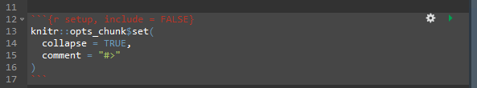
Keep that, but then replace everything after it to read something
like this (make sure to change the package name where needed to match
yours, including in the R code chunk call to
library():
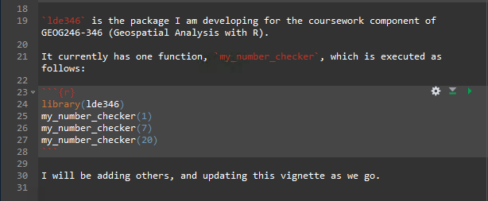
Go ahead and knit that, and see the result. The chunk should execute and produce the relevant output.
Commit and push the additions/changes, including the new vignette,
which was previously untracked. Note that the html file for the vignette
does not show up in the git interface, because
use_vignette() added any html file in the vignettes folder
to the .gitignore file. Vignettes as supposed to build with the package,
so no need to track changes to the html since the Rmd is the source
file, and more clearly shows the changes (since it is basically a text
file, which is most human-readable).
Build your package with the vignette
To get the vignette to knit and install with your package, go into
the R console, and run:
devtools::document()
devtools::install(build_vignettes = TRUE)You should see output that looks very similar to the following in your console:
√ checking for file 'C:\Users\Administrator\Desktop\lde346/DESCRIPTION' ...
- preparing 'lde346': (438ms)
√ checking DESCRIPTION meta-information ...
- installing the package to build vignettes
√ creating vignettes (1.9s)
Warning in as.POSIXlt.POSIXct(x, tz) :
unable to identify current timezone 'C':
please set environment variable 'TZ'
- checking for LF line-endings in source and make files and shell scripts
- checking for empty or unneeded directories
- building 'lde346_0.0.1.tar.gz'
Running "C:/PROGRA~1/R/R-35~1.2/bin/x64/Rcmd.exe" INSTALL \
"C:\Users\ADMINI~1\AppData\Local\Temp\2\RtmpYrAZzD/lde346_0.0.1.tar.gz" --install-tests
|arning in strptime(xx, f, tz = tz) :
unable to identify current timezone 'C':
please set environment variable 'TZ'
* installing to library 'C:/Program Files/R/R-3.5.2/library'
* installing *source* package 'lde346' ...
** R
** inst
** byte-compile and prepare package for lazy loading
** help
*** installing help indices
'lde346'ting help for package finding HTML links ...
done
-y_number_checker html
** building package indices
** installing vignettes
** testing if installed package can be loaded
*** arch - i386
*** arch - x64
* DONE (lde346)
In R CMD INSTALL
Reloading attached lde346And then, as discussed previously using the roxygen2
example using one of the two approaches suggested to find your package
vignette, e.g.
browseVignettes("lde346") # replace with your package namePretty cool, no?
One more way we are going to try this. Checking whether your package
can be installed locally. We are going to use another
devtools function:
devtools::install_github("agroimpacts/lde346", build_vignettes = TRUE,
auth_token = "paste_your_github_token_here")One other tweak: in your DESCRIPTION you will see this line:
Depends: R (>= 3.5.2)The number might be lower than this, reflecting the version of
R you were using when creating the package. I recommend it
be set to (>= 3.0.0), to allow older versions of R to
build the package.
Okay, that’s a wrap for this unit. You just have to do the assignment now.
Unit Assignment
For the first assignment of this class, you are going to do the following:
Add a new function to your package, based on the
my_number_checkerfunction you were working with above-
Copy that code and paste that it into a new
Rscript (source) file. Make it first conform to theRstyle guide, so that it looks like this:#' A number-checking function #' @description This function allows you to test whether a number falls #' into the Goldilocks range (5-9) or not #' @param x A number #' @export #' @examples #' my_number_checker(1) #' my_number_checker(7) #' my_number_checker(11) my_number_checker <- function(x) { if(x < 5) { print("Too low!") } else if(x >= 5 & x < 10) { print("Just right!!! :)") } else { print("Too high!") } } Now change the function that it is named
my_multiplier. Change the main argument (“x”) to “value”, update the documentation to reflect that change and the change in the function name, in all places that it seems relevant, and edit the firstprintstatement so that instead of “Too low!”, a character output, you multiply “value” by 1 (value * 1, unquoted). Replace theprintwithreturn. Do the same for the second statement, by change the multiplier to 5, and for the final one change it to multiply by 10.Save the file in the R/ folder so that it has the same name as the function (with .R extension).
Update your vignette so that it demonstrates how
my_multiplieris used, in addition to the demonstration ofmy_number_checkerthat you have already added.Commit and push your changes. Before committing, delete the
hello.Rdandhello.Rfiles, as we do not want those. Also do not commit html files in your vignettes folder. Test installing your packages so that it builds with a browsable vignette. Usedevtools::install, and alsodevtools::install_githubto make sure that it does.Once complete, create a new branch called “a1” in your local repo. Push that branch to GitHub as well. Then switch back into (i.e. checkout) your main branch.
You are done, with the exception of several questions we will ask you next class to test your understanding of the assignment.